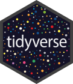
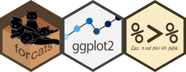
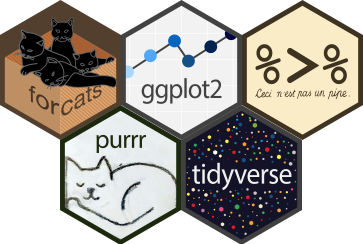

library(magick)
library(purrr)
sticker_files <- list.files("hex-stickers", full.names = TRUE)
stickers <- sticker_files %>%
map(compose(image_read, ~ image_transparent(., "white"), image_trim, .dir = "forward")) %>%
set_names(basename(sticker_files))Neatly aligning hex stickers for presentations or reports is a tedious process. It is repetitive, and very easy to get wrong. Despite the physical hexagons having a standardised shape and size, digital hexagons appear in many forms. With variation in file type, resolution, transparency and layouts, working with hexagon files can prove challenging.
The code in this blog is bundled into the hexwall R script (available at mitchelloharawild/hexwall), making it simpler to arrange your stickers.
My need for this functionality began with the creation of a hex sticker feature wall at useR! 2018. This involved arranging approximately 200 stickers in the shape of Australia, which you can read about in this blog post.
In that project we collected the stickers via email, but for this blog we will use the RStudio hex-stickers from their GitHub repository (rstudio/hex-stickers).
I’ve picked out a few hex stickers from this repository and placed the png images from the PNG folder in a hex-stickers folder.
Preparation
Before we start aligning the hexagons, we first need to convert them to a common size and format. In most cases, the conversion can be done automatically with the ROpenSci magick package.
All images can be read with image_read, however better quality for svg and png formats can be obtained using their specific reading functions. As many stickers had white backgrounds (especially pdf format images), I first convert white to transparent, and then use image_trim to automatically crop the images.
Unfortunately some stickers can not be fixed automatically, as they were either too low resolution or incorrectly shaped. These cases are easily identifiable for manual fixing from the image information provided by image_info().
# Desired sticker resolution in pixels
sticker_width <- 121
# Scale all stickers to the desired pixel width
stickers <- stickers %>%
map(image_scale, sticker_width)
# Identify low resolution stickers
stickers %>%
map_lgl(~ with(
image_info(.x),
width < (sticker_width-1)/2 && format != "svg"
))#> forcats.png ggplot2.png pipe.png purrr.png tidyverse.png
#> FALSE FALSE FALSE FALSE FALSE# Identify incorrect shapes / proportions (tolerance of +-2 height)
stickers %>%
map_lgl(~ with(
image_info(.x),
height < (median(height)-2) | height > (median(height) + 2)
))#> forcats.png ggplot2.png pipe.png purrr.png tidyverse.png
#> FALSE FALSE FALSE FALSE FALSEAs some stickers may have slightly different proportions (wihin tolerances above), we first force the stickers to have identical dimensions for alignment.
# Extract correct sticker height (this could also be calculated directly from width)
sticker_height <- stickers %>%
map(image_info) %>%
map_dbl("height") %>%
median
# Coerce sticker dimensions
stickers <- stickers %>%
map(image_resize, paste0(sticker_width, "x", sticker_height, "!"))
stickers[["tidyverse.png"]]
Alignment
Using magick, it is relatively trivial to align hexagons into rows using magick’s image_append() functionality. The total hexagons in each row alternates between odd and even numbers.
sticker_row_size <- 3
# Calculate row sizes
sticker_col_size <- ceiling(length(stickers)/(sticker_row_size-0.5))
row_lens <- rep(c(sticker_row_size,sticker_row_size-1), length.out=sticker_col_size)
row_lens[length(row_lens)] <- row_lens[length(row_lens)] - (length(stickers) - sum(row_lens))
sticker_rows <- map2(row_lens, cumsum(row_lens),
~ seq(.y-.x+1, by = 1, length.out = .x)) %>%
map(~ stickers[.x] %>%
invoke(c, .) %>%
image_append)#> Warning: `invoke()` was deprecated in purrr 1.0.0.
#> i Please use `exec()` instead.sticker_rows[[1]]
To simplify the placement of these sticker rows, we can first create a white canvas for us to place sticker rows on. The width is simple to calculate, but the height is slightly more complex. The extra height of each row is the height of the left side of the hexagon (approximately sticker_height/1.33526), then to add the angled parts of the hexagon for the top and bottom, we add the height of one whole sticker.
# Add stickers to canvas
canvas <- image_blank(sticker_row_size*sticker_width,
sticker_height + (sticker_col_size-1)*sticker_height/1.33526,
"white")With our canvas and list of sticker_rows, it is time to add them to the final image using image_composite. The offset of the rows is calculated from the current row number (..3), which is used to add the current row (..2) to the canvas (..1).
reduce2(sticker_rows, seq_along(sticker_rows),
~ image_composite(
..1, ..2,
offset = paste0("+", ((..3-1)%%2)*sticker_width/2,
"+", round((..3-1)*sticker_height/1.33526))
),
.init = canvas)
hexwall
Now that you know how it works, try it out on your own hexagon stickers. You can use the code above, or the script available on Github (mitchelloharawild/hexwall). To use the hexwall script on this example, you would use the hexwall function like this:
source("hexwall.R")
hexwall("path", sticker_row_size = 9, sticker_width = 121)Citation
BibTeX citation:
@online{o'hara-wild2018,
author = {O’Hara-Wild, Mitchell},
title = {Arranging Hex Stickers in {R}},
date = {2018-07-10},
url = {https://mitchelloharawild.com//blog/hexwall},
langid = {en}
}
For attribution, please cite this work as:
O’Hara-Wild, Mitchell. 2018. “Arranging Hex Stickers in R.”
July 10, 2018. https://mitchelloharawild.com//blog/hexwall.